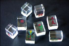
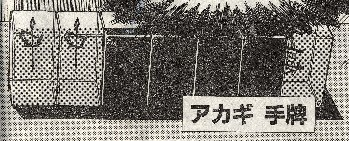

月刊近代麻雀で、アカギと鷲巣サマが何年越しで対局している。月１の連載で１回ツモ切りするのに２，３カ月かかる。この調子でゆけば、決着がつくのにあと１，２年はかかりそう。
この対局では透明牌なるものが使われているが、麻雀用品販売の市川屋から実物が売りに出されている。中国製の偽物まで登場しているそうだから、それなりに人気があるらしい。

それはいいけど この透明牌、現実はマンガのようにはゆかない。マンガでは、こんなふうにハッキリ透けてみえる（ことになっている）。

しかし実物は小さいうえ、透明とはいえ厚みのある樹脂越しに見るので、こんなにうまくは見えない。おまけに裏文字でみるので、中や１筒ならともかく、万子などでは何万か非常に分かりづらい。なんとか見ようと思えば、身をかがめてのぞき込むようにする必要がある。
そいで前から思っていることだけど、何も透明にする必要はない。これまでと同じ不透明な材質でいいから、後ろ側も前側と同じように彫る。要するに両面とも牌面にする。
そうすればアカギも鷲巣サマも、裏文字を判読する必要もなく、簡単に見分けられる。今からでも遅くないから、福○さんに教えてあげたい。（^-^；
|